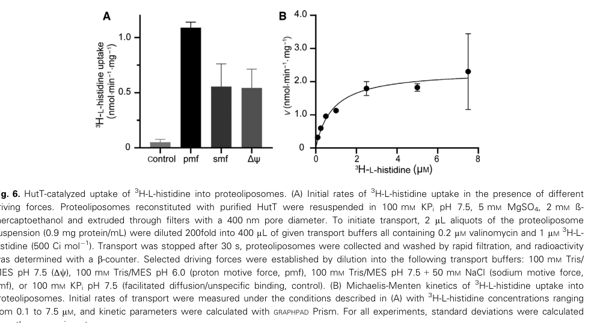

hutT encodes the major high-affinity L-histidine uptake transporter of P. putida KT2440. It is an inner-membrane APC-family histidine:proton symporter whose deletion severely impairs growth on histidine.
| GO Term | Evidence | Action | Reason |
|---|---|---|---|
|
GO:0005886
plasma membrane
|
IEA
GO_REF:0000044 |
ACCEPT |
Summary: HutT is an inner/cell membrane multi-pass transporter.
Reason: Retain the specific bacterial cell-membrane location.
Supporting Evidence:
file:PSEPK/hutT/hutT-uniprot.txt
SUBCELLULAR LOCATION: Cell inner membrane
file:PSEPK/hutT/hutT-deep-research-falcon.md
HutT is an integral **cytoplasmic membrane** protein
|
|
GO:0006865
amino acid transport
|
IEA
GO_REF:0000002 |
MARK AS OVER ANNOTATED |
Summary: Generic amino acid transport is true but less specific than L-histidine transport.
Reason: Prefer the added L-histidine transport annotation for the reviewed biology. Competition assays establish narrow specificity for L-histidine, with little or no transport of other amino acids, so the generic amino acid transport term is an over-annotation.
Supporting Evidence:
file:PSEPK/hutT/hutT-uniprot.txt
Binds and catalyzes the uptake of histidine into the cell
file:PSEPK/hutT/hutT-deep-research-falcon.md
HutT shows **narrow substrate specificity for L-histidine**
file:PSEPK/hutT/hutT-deep-research-falcon.md
little/no competition by arginine, lysine, cyclic proline, imidazole, 3-amino-1,2,4-triazole, or urocanate
|
|
GO:0016020
membrane
|
IEA
GO_REF:0000002 |
MARK AS OVER ANNOTATED |
Summary: Generic membrane is superseded by the more specific plasma/cell membrane annotation.
Reason: Retain GO:0005886 instead.
Supporting Evidence:
file:PSEPK/hutT/hutT-uniprot.txt
SUBCELLULAR LOCATION: Cell inner membrane
file:PSEPK/hutT/hutT-deep-research-falcon.md
HutT is an integral **cytoplasmic membrane** protein
|
|
GO:0055085
transmembrane transport
|
IEA
GO_REF:0000002 |
ACCEPT |
Summary: HutT directly mediates transmembrane histidine uptake.
Reason: Retain the broad transport process because it is directly supported.
Supporting Evidence:
file:PSEPK/hutT/hutT-uniprot.txt
Reaction=L-histidine(out) + n H(+)(out) = L-histidine(in) + n H(+)(in);
file:PSEPK/hutT/hutT-deep-research-falcon.md
These data support HutT as a **secondary active transporter** driven by the electrochemical proton gradient
|
|
GO:0015293
symporter activity
|
IDA
PMID:34245008 HutT functions as the major L-histidine transporter in Pseud... |
NEW |
Summary: HutT functions as a histidine:proton symporter.
Reason: GOA lacks a molecular-function transporter annotation for the experimentally supported proton-coupled uptake activity.
Supporting Evidence:
file:PSEPK/hutT/hutT-uniprot.txt
Functions as an histidine:proton symporter
file:PSEPK/hutT/hutT-deep-research-falcon.md
These data support HutT as a **secondary active transporter** driven by the electrochemical proton gradient
file:PSEPK/hutT/hutT-deep-research-falcon.md
CCCP (20 µM) and DNP (2 mM) abolish detectable ^3H-histidine uptake in whole cells
PMID:34245008
HutT functions as a high-affinity histidine : proton symporter
|
|
GO:0005291
high-affinity L-histidine transmembrane transporter activity
|
IDA
PMID:34245008 HutT functions as the major L-histidine transporter in Pseud... |
NEW |
Summary: HutT is a high-affinity L-histidine importer, with measured sub-micromolar KM values in intact cells and in reconstituted proteoliposomes. This molecular function is more specific than the generic symporter activity term, capturing both the substrate (L-histidine) and the high-affinity character of the transporter.
Reason: The experimentally measured KM values (~0.83-0.99 uM) establish high-affinity L-histidine transport, a more informative MF than the generic symporter activity term.
Supporting Evidence:
file:PSEPK/hutT/hutT-uniprot.txt
KM=0.83 uM for L-histidine (in proteoliposomes)
file:PSEPK/hutT/hutT-deep-research-falcon.md
HutT belongs to the **amino acid–polyamine–organocation (APC)** superfamily of secondary transporters
file:PSEPK/hutT/hutT-deep-research-falcon.md
apparent KM = 0.83 ± 0.25 µM
|
|
GO:1902024
L-histidine transport
|
IMP
PMID:34245008 HutT functions as the major L-histidine transporter in Pseud... |
NEW |
Summary: HutT is the major L-histidine uptake system in KT2440.
Reason: This is more specific than the existing generic amino acid transport annotation.
Supporting Evidence:
file:PSEPK/hutT/hutT-uniprot.txt
Major high-affinity histidine transporter
file:PSEPK/hutT/hutT-deep-research-falcon.md
Deleting **hutT** in *P. putida* KT2440 severely impairs growth on histidine, indicating HutT is the **dominant physiologically relevant uptake route** under tested conditions
file:PSEPK/hutT/hutT-deep-research-falcon.md
hutT** is encoded within the histidine utilization (**hut**) cluster and in *P. putida* is the single hutT-like gene
PMID:34245008
Deletion of hutT severely impairs growth of P. putida on histidine
|
Q: Does HutT transport any histidine-related metabolites in soil-like nutrient mixtures, or is its physiological substrate range limited to L-histidine?
Suggested experts: Pseudomonas amino-acid transport experts
Experiment: Measure uptake and competition in wild type, hutT deletion, and complemented strains using radiolabeled or LC-MS-tracked histidine across histidine analogs and proton-gradient inhibitors.
Type: transport kinetics and substrate competition assay
The research report should be a detailed narrative explaining the function, biological processes, and localization of the gene product. Citations should be given for all claims.
You should prioritize authoritative reviews and primary scientific literature when conducting research. You can supplement
this with annotations you find in gene/protein databases, but these can be outdated or inaccurate.
We are specifically interested in the primary function of the gene - for enzymes, what reaction is catalyzed, and what is the substrate specificity? For transporters, what is the substrate? For structural proteins or adapters, what is the broader structural role? For signaling molecules, what is the role in the pathway.
We are interested in where in or outside the cell the gene product carries out its function.
We are also interested in the signaling or biochemical pathways in which the gene functions. We are less interested in broad pleiotropic effects, except where these elucidate the precise role.
Include evidence where possible. We are interested in both experimental evidence as well as inference from structure, evolution, or bioinformatic analysis. Precise studies should be prioritized over high-throughput, where available.
The target is HutT, encoded by hutT / PP_5031 in Pseudomonas putida strain KT2440 (ATCC 47054/DSM 6125), corresponding to the UniProt accession Q88CZ8. Primary literature in P. putida KT2440 directly studies HutT (PP_5031) and demonstrates it is an APC-family secondary transporter functioning as the major L-histidine uptake system in this organism (Wirtz et al., 2021, FEBS Letters, published Jul 2021, https://doi.org/10.1002/1873-3468.14159) (wirtz2021huttfunctionsas pages 1-2). This matches the user-provided UniProt description (L-histidine transporter in APC family) and avoids conflation with hutT-like genes in other species.
In many bacteria, histidine serves as a carbon and/or nitrogen source, and catabolism is typically organized in histidine utilization (hut) gene clusters/operons whose expression is tightly regulated (Bender, 2012, Microbiology and Molecular Biology Reviews, published Sep 2012, https://doi.org/10.1128/MMBR.00014-12) (bender2012regulationofthe pages 10-11). Because histidine catabolism begins with uptake, transporter identity and energetics can strongly constrain growth on histidine and the integration of hut metabolism into global C/N regulatory networks (bender2012regulationofthe pages 10-11, monteagudocascales2022theregulatoryhierarchy pages 11-13).
HutT belongs to the amino acid–polyamine–organocation (APC) superfamily of secondary transporters, structurally associated with the LeuT-like fold (core ~10 transmembrane segments arranged as a 5+5 inverted repeat) (Wirtz et al., 2021) (wirtz2021huttfunctionsas pages 1-2). In P. putida KT2440, HutT is functionally established as a high-affinity, high-specificity L-histidine:H+ symporter that uses the proton motive force (pmf) rather than ATP hydrolysis or Na+-symport to drive uptake (wirtz2021huttfunctionsas pages 7-9, wirtz2021huttfunctionsas pages 6-7).
Deleting hutT in P. putida KT2440 severely impairs growth on histidine, indicating HutT is the dominant physiologically relevant uptake route under tested conditions (Wirtz et al., 2021) (wirtz2021huttfunctionsas pages 1-2). This functional assignment is reinforced by direct uptake measurements in intact cells and in reconstituted proteoliposomes containing purified HutT (wirtz2021huttfunctionsas pages 7-9).
HutT shows narrow substrate specificity for L-histidine. Competition experiments (100-fold excess competitors) show strong competition by unlabeled histidine, but little/no competition by arginine, lysine, cyclic proline, imidazole, 3-amino-1,2,4-triazole, or urocanate; an analog that retains key chemical features (1,2,4-triazolyl-3-alanine) significantly inhibits uptake, supporting a binding requirement for the amino and carboxyl groups and a histidine-like ring system (wirtz2021huttfunctionsas pages 6-7, wirtz2022twolhistidinetransporters pages 62-64). Additional mechanistic interpretation emphasizes the importance of the imidazole ring plus amino/carboxyl groups for recognition (wirtz2022twolhistidinetransporters pages 67-69, wirtz2021huttfunctionsas pages 11-12).
Multiple lines of evidence indicate HutT is a proton-coupled symporter:
These data support HutT as a secondary active transporter driven by the electrochemical proton gradient (wirtz2021huttfunctionsas pages 7-9).
HutT-mediated uptake is saturable with µM-to-sub-µM affinity:
These parameters are consistent with HutT functioning as a high-affinity importer, appropriate for scavenging histidine at low extracellular concentrations.
Wirtz et al. identify residues strongly affecting transport activity. For example, substitutions at Lys156 reduce transport dramatically (to <10% for some substitutions; Lys→Arg ~40%), and Glu218 is essential (Ala/Gln eliminate uptake; Asp retains ~70%) (wirtz2021huttfunctionsas pages 9-11). Such results support expert interpretations that conserved charged residues in APC/LeuT-like transporters are crucial for coupling and/or substrate coordination.
HutT is an integral cytoplasmic membrane protein. Bioinformatic topology prediction indicates ~12 mostly hydrophobic α-helical transmembrane segments in a zigzag topology across the cytoplasmic membrane (wirtz2021huttfunctionsas pages 2-4). Experimentally, HutT is purified from membrane fractions (detergent solubilization with DDM), and reconstitution into liposomes yields transport activity, confirming its membrane localization (wirtz2021huttfunctionsas pages 7-9, wirtz2021huttfunctionsas pages 2-4).
In Pseudomonas, hut genes are organized into transcriptional units (e.g., hutU/hutF units in several species). In P. putida, HutT was identified as the main histidine transporter and is described as a single hutT-like gene located within the hut transcriptional context (monteagudocascales2022theregulatoryhierarchy pages 11-13).
A core concept in hut regulation is that urocanate (the first intermediate of histidine degradation) is the physiological inducer that disrupts binding of the HutC repressor at hut promoters (Bender, 2012) (bender2012regulationofthe pages 10-11). In Pseudomonas, HutC typically represses hut transcription until urocanate accumulates, providing pathway-responsive induction (bender2012regulationofthe pages 10-11).
In pseudomonads, histidine utilization is embedded in carbon catabolite repression and nitrogen regulation networks:
A key physiological rationale is that histidine degradation can provide a large nitrogen input; stoichiometric statements in the regulatory synthesis indicate that one histidine molecule yields “three metabolizable nitrogen atoms” and that catabolism produces ammonia/glutamate/formate, motivating tight regulation to preserve carbon/nitrogen homeostasis (monteagudocascales2022theregulatoryhierarchy pages 11-13).
Direct HutT-specific papers in 2023–2024 were not retrieved in this search; however, several high-impact enabling resources (2023–2024) materially advance functional annotation and real-world deployment of genes/transporters in P. putida KT2440.
Köbbing et al. created and validated 10 genomic integration sites (“landing pads”) in P. putida KT2440 identified by transcriptome stability across conditions (Köbbing et al., 2024, ACS Synthetic Biology, published Jul 2024, https://doi.org/10.1021/acssynbio.3c00747) (kobbing2024reliablegenomicintegration pages 1-2). Quantitatively, they report coefficients of variation (CVs) for expression across conditions (excluding a strong urea-stress case) in the ~15–40% range for several loci (e.g., PP_1430 15%, attTn7 18%, PP_4832 23%, PP_4945 40%) (kobbing2024reliablegenomicintegration pages 7-8), and show co-integration interactions are small (<6%), enabling modular multi-gene insertions (kobbing2024reliablegenomicintegration pages 8-9). This directly supports stable chromosomal deployment of HutT (e.g., for uptake-module engineering) without plasmid copy-number variability.
Turlin et al. provide a quantitative RNA-seq resource in P. putida (EM42 derivative) under high formate stress (20 mM glucose ± 240 mM formate), quantifying expression for 5,158 genes with reproducible triplicates and reporting 142–143 differentially expressed genes depending on genotype, with ~93% overlap (Turlin et al., 2023, mSystems, published Jun 2023, https://doi.org/10.1128/msystems.00004-23) (turlin2023coreandauxiliary pages 9-10, turlin2023coreandauxiliary pages 1-2). While not focused on hutT, such datasets improve condition-aware annotation and provide quantitative baselines for stress-responsive engineering contexts in the same chassis organism.
Schmidt et al. performed BarSeq fitness profiling across 71 nitrogen-related conditions, identifying 672 genes with strong phenotypes (|fitness|>1, |t|>5), including 112 transport-related proteins and 100 transcriptional regulators (Schmidt et al., 2022, Applied and Environmental Microbiology, published Apr 2022, https://doi.org/10.1128/AEM.02430-21) (schmidt2022nitrogenmetabolismin pages 2-4, schmidt2022nitrogenmetabolismin pages 1-2). They provide interactive resources for quantitative per-gene fitness exploration (https://fit.genomics.lbl.gov and https://ppnitrogentsne.lbl.gov) (schmidt2022nitrogenmetabolismin pages 2-4, schmidt2022nitrogenmetabolismin pages 1-2). These datasets are a major recent foundation for validating transporter roles and mapping histidine-related genetic dependencies at genome scale.
Histidine availability and histidine catabolism/transport are framed as relevant in multiple ecological contexts: histidine occurs in plant exudates and can be used by root-colonizing pseudomonads; histidine and urocanate influence host recognition and virulence gene expression in P. aeruginosa; and extracellular histidine has been reported in infection models as a potential nitrogen source influencing colonization (wirtz2021huttfunctionsas pages 1-2, wirtz2022twolhistidinetransporters pages 58-59). These points motivate transporter-level understanding when interpreting Pseudomonas colonization phenotypes and nutrient niches.
Work on HutC in Pseudomonas fluorescens shows hut regulation can extend beyond metabolism into global physiological programs. HutC was predicted to bind 143 genomic targets (P < 10−4) and, in a hutC mutant grown on succinate+histidine, RNA-seq detected 794 upregulated and 525 downregulated genes (with fold-change cutoff 2.0), accompanied by phenotypes like increased motility and pyoverdine production and altered plant-surface colonization behavior (Naren & Zhang, 2020, Journal of Bacteriology, published Apr 2020, https://doi.org/10.1128/JB.00792-19) (naren2020globalregulatoryroles pages 1-2). While this is not P. putida KT2440 HutT directly, it provides authoritative expert context for why histidine transport/catabolism modules can have broad systems-level impacts.
The 2024 landing-pad work provides a practical implementation pathway for stable transporter expression and functional testing in P. putida KT2440, including quantified stability across conditions and limited interaction between multiple integrated cassettes (kobbing2024reliablegenomicintegration pages 7-8, kobbing2024reliablegenomicintegration pages 8-9). Combined with HutT’s demonstrated high-affinity uptake kinetics and pmf coupling, HutT can be deployed as a robust “part” for engineering histidine assimilation, biosensor coupling, or catabolic pathway modules that rely on controlled amino-acid import (wirtz2021huttfunctionsas pages 6-7, wirtz2021huttfunctionsas pages 9-11).
The following evidence matrices summarize (i) HutT’s core functional annotation evidence and (ii) 2022–2024 resources enabling real-world implementations.
| Claim/feature | Key findings (include quantitative values when available) | Evidence type/assay | Primary source (with year, venue, URL/DOI) | Citation ID |
|---|---|---|---|---|
| Physiological role (growth phenotypes) | hutT corresponds to PP_5031/Q88CZ8 in Pseudomonas putida KT2440 and functions as the major L-histidine uptake system; deletion of hutT severely impairs growth on histidine, indicating strong physiological dependence on HutT for histidine utilization. | Gene deletion/mutant growth phenotype; whole-cell radiotracer uptake; purified protein reconstitution | Wirtz et al., 2021, FEBS Letters (published Jul 2021), https://doi.org/10.1002/1873-3468.14159 | (wirtz2021huttfunctionsas pages 1-2) |
| Substrate specificity / competition | HutT is highly specific for L-histidine. Nonradioactive L-histidine strongly competes with ^3H-histidine uptake, whereas arginine, lysine, cyclic proline, imidazole, 3-amino-1,2,4-triazole, and urocanate show little or no competition; 1,2,4-triazolyl-3-alanine reduces uptake significantly. Recognition requires the imidazole ring plus amino and carboxyl groups; only limited ring modification (triazole) is tolerated. | Competition uptake assays with ^3H-L-histidine; binding/transport assays in cells and proteoliposomes | Wirtz et al., 2021, FEBS Letters (published Jul 2021), https://doi.org/10.1002/1873-3468.14159; Wirtz, 2022, LMU München dissertation, https://doi.org/10.5282/edoc.30600 | (wirtz2022twolhistidinetransporters pages 67-69, wirtz2021huttfunctionsas pages 11-12, wirtz2022twolhistidinetransporters pages 62-64) |
| Transport mechanism / energetics | HutT is a proton-coupled secondary transporter (L-histidine:H^+ symporter). Protonophores CCCP (20 µM) and DNP (2 mM) abolish or strongly inhibit uptake, while valinomycin (2 µM), nigericin (6 µM), and nonactin (10 µM) do not support a Na^+-coupled model. In proteoliposomes, an inward proton motive force (Δψ + ΔpH) stimulates uptake ~21-fold; Δψ alone or Δψ plus inward Na^+ gives ~10–11-fold stimulation. | Ionophore perturbation in intact cells; proteoliposome uptake under defined electrochemical gradients | Wirtz et al., 2021, FEBS Letters (published Jul 2021), https://doi.org/10.1002/1873-3468.14159; Wirtz, 2022, LMU München dissertation, https://doi.org/10.5282/edoc.30600 | (wirtz2022twolhistidinetransporters pages 66-67, wirtz2022twolhistidinetransporters pages 64-66, wirtz2022twolhistidinetransporters pages 67-69, wirtz2021huttfunctionsas pages 7-9) |
| Kinetic parameters (intact cells and proteoliposomes) | Intact-cell uptake in P. putida gave Vmax = 1.93 ± 0.11 nmol mg^-1 min^-1 and apparent KM = 0.99 ± 0.23 µM. Heterologous expression in E. coli JW2306 gave Vmax = 7.30 ± 0.37 nmol mg^-1 min^-1 and apparent KM = 2.4 ± 0.38 µM. Reconstituted proteoliposomes gave Vmax = 2.34 ± 0.23 nmol mg^-1 min^-1 and apparent KM = 0.83 ± 0.25 µM. These values support high-affinity histidine uptake. | Michaelis-Menten analysis of ^3H-L-histidine uptake in intact cells and purified/reconstituted HutT proteoliposomes | Wirtz, 2022, LMU München dissertation, https://doi.org/10.5282/edoc.30600; figure extraction from Wirtz et al., 2021, FEBS Letters, https://doi.org/10.1002/1873-3468.14159 | (wirtz2022twolhistidinetransporters pages 66-67, wirtz2022twolhistidinetransporters pages 62-64, wirtz2021huttfunctionsas media bb31a9f7) |
| Topology / localization | HutT is an APC-family membrane transporter predicted to contain 12 mostly hydrophobic α-helical transmembrane segments traversing the cytoplasmic membrane in zigzag topology; APC/LeuT-type architecture implies a core transporter fold with ~10 TMs in a 5+5 inverted repeat. Experimentally, HutT partitions with membranes, is solubilized with DDM, purified by Ni-NTA, and reconstituted into liposomes for transport assays. | In silico topology prediction; membrane fractionation; detergent solubilization; purification; proteoliposome reconstitution | Wirtz et al., 2021, FEBS Letters (published Jul 2021), https://doi.org/10.1002/1873-3468.14159; Wirtz, 2022, LMU München dissertation, https://doi.org/10.5282/edoc.30600 | (wirtz2021huttfunctionsas pages 2-4, wirtz2022twolhistidinetransporters pages 58-59, wirtz2021huttfunctionsas pages 1-2) |
| Pathway / regulation context | hutT is encoded within the histidine utilization (hut) cluster and in P. putida is the single hutT-like gene. In pseudomonads, hut genes are controlled by the local repressor HutC (urocanate-responsive), and by global C/N regulators CbrAB and NtrBC/NtrC. CbrAB is required for growth on histidine as sole carbon source, whereas NtrC is important when histidine serves as a nitrogen source; CbrAB also acts through the CrcY/CrcZ–Crc/Hfq catabolite repression cascade. In related Pseudomonas fluorescens, transporter genes in the hut locus are direct or indirect targets in this regulatory network. | Operon/regulatory review synthesis; promoter-binding genetics/EMSA/footprinting in related pseudomonads; comparative locus analysis | Bender, 2012, Microbiology and Molecular Biology Reviews (published Sep 2012), https://doi.org/10.1128/MMBR.00014-12; Naren & Zhang, 2021, Nucleic Acids Research (published Mar 2021), https://doi.org/10.1093/nar/gkab091; Monteagudo-Cascales et al., 2022, Genes (published Feb 2022), https://doi.org/10.3390/genes13020375 | (monteagudocascales2022theregulatoryhierarchy pages 11-13, naren2021roleofa pages 6-6, bender2012regulationofthe pages 10-11, naren2021roleofa pages 8-9, naren2021roleofa pages 5-6) |
Table: This table compiles the main experimental and contextual evidence for HutT/PP_5031 in Pseudomonas putida KT2440, including function, specificity, energetics, kinetics, localization, and pathway context. It is useful as a concise functional-annotation evidence matrix with source-linked citations.
| Development/resource | What it enables | Quantitative/statistical highlights | Publication (date, journal, URL/DOI) | Citation ID |
|---|---|---|---|---|
| HutT functional characterization as a reference module for transporter engineering | Provides a validated membrane uptake module for importing L-histidine in P. putida KT2440; useful as a benchmark for transporter expression, mutagenesis, proton-coupled uptake design, and integration into synthetic catabolic circuits. | Whole-cell uptake increased from 0.04 ± 0.01 to 0.74 ± 0.09 nmol min^-1 mg^-1 upon hutT expression; apparent K_M = 0.99 ± 0.23 µM and V_max = 1.93 ± 0.11 nmol mg^-1 min^-1 in P. putida cells; reconstituted proteoliposomes gave K_M = 0.83 ± 0.25 µM and V_max = 2.34 ± 0.23 nmol mg^-1 min^-1; proton motive force stimulated uptake about 21-fold and membrane potential-based conditions about 10–11-fold; deletion of hutT severely impaired growth on histidine. | Wirtz et al., Jul 2021, FEBS Letters, https://doi.org/10.1002/1873-3468.14159; Wirtz dissertation, 2022, LMU München, https://doi.org/10.5282/edoc.30600 | (wirtz2021huttfunctionsas pages 1-2, wirtz2022twolhistidinetransporters pages 66-67, wirtz2021huttfunctionsas pages 7-9, wirtz2021huttfunctionsas pages 6-7, wirtz2021huttfunctionsas pages 9-11) |
| BarSeq nitrogen-metabolism resource | Enables genome-wide identification of genes affecting nitrogen-source utilization, including histidine-related transport and catabolism; supports pathway discovery, transporter prioritization, regulator mapping, and metabolic-engineering target selection. | Screened 52 nitrogen-containing compounds plus 19 amino-acid dropout conditions for 71 total conditions; identified 672 genes with strong phenotypes using thresholds fitness > 1 and t > 5 in absolute value; included 100 transcriptional regulators and 112 transport-related proteins; interactive viewers: https://fit.genomics.lbl.gov and https://ppnitrogentsne.lbl.gov. | Schmidt et al., Apr 2022, Applied and Environmental Microbiology, https://doi.org/10.1128/AEM.02430-21 | (schmidt2022nitrogenmetabolismin pages 2-4, schmidt2022nitrogenmetabolismin pages 1-2, schmidt2022nitrogenmetabolismin pages 10-12) |
| 2023 RNA-seq systems analysis resource | Supplies a recent transcriptomic and physiological framework for condition-dependent annotation and engineering of P. putida genes, useful for choosing promoters, stress conditions, and expression contexts for transporter modules such as HutT. | RNA-seq quantified expression for 5,158 genes with reproducible triplicates; conditions included 20 mM glucose ± 240 mM formate in DBM medium, harvested at 3 h for glucose and 4 h for glucose plus formate; detected 142 DEGs in EM42 and 143 DEGs in ΔΔFDH, with 133 shared DEGs or about 93% overlap; examples include moaA/moaB-II log2FC 2.4 and 4.3, pedE/pedH/pedF log2FC 2.6, 5.1, 5.7, and nuo operon log2FC below -2. | Turlin et al., Jun 2023, mSystems, https://doi.org/10.1128/msystems.00004-23 | (turlin2023coreandauxiliary pages 9-10, turlin2023coreandauxiliary pages 1-2) |
| 2024 genomic landing pads for stable expression | Provides practical chromosomal insertion sites for reliable, condition-robust expression of transporters and pathway modules in P. putida; directly applicable to stable genomic deployment of HutT or histidine-utilization circuits. | Identified 10 candidate landing pads using RNA-seq-guided site selection; CVs across tested conditions ranged about 15–40% when excluding glucose plus urea, with examples PP_1430 15%, attTn7 18%, PP_4832 23%, PP_4145 25%, PP_0340 31%, PP_4945 40%; some sites showed PP_3808 12%, PP_4709 24%, while PP_2322 45% was unstable; co-integration effects were less than 6%; prior site effects reached up to 27-fold variation in fluorescence; validated with biological replicates including n = 3 and n greater than 6. | Köbbing et al., Jul 2024, ACS Synthetic Biology, https://doi.org/10.1021/acssynbio.3c00747 | (kobbing2024reliablegenomicintegration pages 7-8, kobbing2024reliablegenomicintegration pages 8-9, kobbing2024reliablegenomicintegration pages 1-2) |
| Real-world implementation across 2022-2024 resources | Together, these tools enable rational strain engineering: BarSeq finds candidate uptake and catabolic genes; RNA-seq defines condition-responsive expression regimes; landing pads support stable genomic insertion; HutT serves as a quantitatively benchmarked uptake part for synthetic biology, nutrient assimilation design, and transporter optimization in industrial P. putida chassis. | Combined resource scale includes a validated single-gene transporter module for hutT/PP_5031, genome-wide mutant fitness across 71 conditions, transcriptomics over 5,158 genes, and 10 validated insertion loci. These datasets reduce uncertainty in pathway design, improve robustness of chromosomal constructs, and support uptake-module engineering under defined physiological and stress contexts. | Schmidt et al., Apr 2022, Applied and Environmental Microbiology, https://doi.org/10.1128/AEM.02430-21; Turlin et al., Jun 2023, mSystems, https://doi.org/10.1128/msystems.00004-23; Köbbing et al., Jul 2024, ACS Synthetic Biology, https://doi.org/10.1021/acssynbio.3c00747; Wirtz et al., Jul 2021, FEBS Letters, https://doi.org/10.1002/1873-3468.14159 | (schmidt2022nitrogenmetabolismin pages 2-4, schmidt2022nitrogenmetabolismin pages 1-2, kobbing2024reliablegenomicintegration pages 7-8, kobbing2024reliablegenomicintegration pages 8-9, kobbing2024reliablegenomicintegration pages 1-2, turlin2023coreandauxiliary pages 9-10, turlin2023coreandauxiliary pages 1-2, wirtz2021huttfunctionsas pages 1-2) |
Table: This table summarizes 2022-2024 resources and developments relevant to HutT and histidine utilization in Pseudomonas putida KT2440. It highlights how transporter characterization, functional genomics, transcriptomics, and genome-engineering tools support real-world strain design and stable implementation.
Transport energetics and kinetics for HutT are directly supported by extracted figures from the primary FEBS Letters study (Wirtz et al., 2021), including intact-cell kinetics (Fig. 3), ionophore/protonophore and pmf dependence (Fig. 4), and proteoliposome driving force and kinetic fits (Fig. 6) (wirtz2021huttfunctionsas media bb31a9f7, wirtz2021huttfunctionsas media 15f466af, wirtz2021huttfunctionsas media c3ec91f9, wirtz2021huttfunctionsas media 094c35e1).
Gene/protein: hutT / HutT (PP_5031; UniProt Q88CZ8) in Pseudomonas putida KT2440.
Primary function: High-affinity L-histidine importer.
Mechanism: L-histidine:H+ symporter (secondary active transport driven by proton motive force). Uptake is abolished by protonophores and strongly stimulated by imposed pmf in proteoliposomes (wirtz2021huttfunctionsas pages 7-9).
Substrate specificity: Highly selective for L-histidine; limited inhibition by close analogs; other basic amino acids (Arg/Lys) and urocanate do not significantly compete (wirtz2021huttfunctionsas pages 6-7).
Kinetic parameters: In P. putida cells: KM ~ 0.99 µM, Vmax ~ 1.93 nmol mg−1 min−1; in proteoliposomes: KM ~ 0.83 µM, Vmax ~ 2.34 nmol mg−1 min−1 (wirtz2021huttfunctionsas pages 6-7, wirtz2021huttfunctionsas pages 9-11).
Localization: Cytoplasmic membrane, multi-pass (predicted ~12 TM helices) (wirtz2021huttfunctionsas pages 2-4).
Pathway context: Histidine utilization (hut) system and C/N homeostasis; regulation integrates local HutC repression (urocanate-inducible) with global CbrAB and NtrBC networks (bender2012regulationofthe pages 10-11, monteagudocascales2022theregulatoryhierarchy pages 11-13).
References
(wirtz2021huttfunctionsas pages 1-2): Larissa Wirtz, Michelle Eder, Anna‐Katharina Brand, and Heinrich Jung. Hutt functions as the major l‐histidine transporter in pseudomonas putida kt2440. FEBS Letters, 595:2113-2126, Jul 2021. URL: https://doi.org/10.1002/1873-3468.14159, doi:10.1002/1873-3468.14159. This article has 11 citations and is from a peer-reviewed journal.
(bender2012regulationofthe pages 10-11): Robert A. Bender. Regulation of the histidine utilization (hut) system in bacteria. Microbiology and Molecular Biology Reviews, 76:565-584, Sep 2012. URL: https://doi.org/10.1128/mmbr.00014-12, doi:10.1128/mmbr.00014-12. This article has 195 citations and is from a domain leading peer-reviewed journal.
(monteagudocascales2022theregulatoryhierarchy pages 11-13): Elizabet Monteagudo-Cascales, Eduardo Santero, and Inés Canosa. The regulatory hierarchy following signal integration by the cbrab two-component system: diversity of responses and functions. Genes, 13:375, Feb 2022. URL: https://doi.org/10.3390/genes13020375, doi:10.3390/genes13020375. This article has 24 citations.
(wirtz2021huttfunctionsas pages 7-9): Larissa Wirtz, Michelle Eder, Anna‐Katharina Brand, and Heinrich Jung. Hutt functions as the major l‐histidine transporter in pseudomonas putida kt2440. FEBS Letters, 595:2113-2126, Jul 2021. URL: https://doi.org/10.1002/1873-3468.14159, doi:10.1002/1873-3468.14159. This article has 11 citations and is from a peer-reviewed journal.
(wirtz2021huttfunctionsas pages 6-7): Larissa Wirtz, Michelle Eder, Anna‐Katharina Brand, and Heinrich Jung. Hutt functions as the major l‐histidine transporter in pseudomonas putida kt2440. FEBS Letters, 595:2113-2126, Jul 2021. URL: https://doi.org/10.1002/1873-3468.14159, doi:10.1002/1873-3468.14159. This article has 11 citations and is from a peer-reviewed journal.
(wirtz2022twolhistidinetransporters pages 62-64): Two L-histidine transporters and one sensor kinase This article has 0 citations.
(wirtz2022twolhistidinetransporters pages 67-69): Two L-histidine transporters and one sensor kinase This article has 0 citations.
(wirtz2021huttfunctionsas pages 11-12): Larissa Wirtz, Michelle Eder, Anna‐Katharina Brand, and Heinrich Jung. Hutt functions as the major l‐histidine transporter in pseudomonas putida kt2440. FEBS Letters, 595:2113-2126, Jul 2021. URL: https://doi.org/10.1002/1873-3468.14159, doi:10.1002/1873-3468.14159. This article has 11 citations and is from a peer-reviewed journal.
(wirtz2021huttfunctionsas pages 9-11): Larissa Wirtz, Michelle Eder, Anna‐Katharina Brand, and Heinrich Jung. Hutt functions as the major l‐histidine transporter in pseudomonas putida kt2440. FEBS Letters, 595:2113-2126, Jul 2021. URL: https://doi.org/10.1002/1873-3468.14159, doi:10.1002/1873-3468.14159. This article has 11 citations and is from a peer-reviewed journal.
(wirtz2021huttfunctionsas pages 2-4): Larissa Wirtz, Michelle Eder, Anna‐Katharina Brand, and Heinrich Jung. Hutt functions as the major l‐histidine transporter in pseudomonas putida kt2440. FEBS Letters, 595:2113-2126, Jul 2021. URL: https://doi.org/10.1002/1873-3468.14159, doi:10.1002/1873-3468.14159. This article has 11 citations and is from a peer-reviewed journal.
(kobbing2024reliablegenomicintegration pages 1-2): Sebastian Köbbing, Thorsten Lechtenberg, Benedikt Wynands, Lars M. Blank, and Nick Wierckx. Reliable genomic integration sites in pseudomonas putida identified by two-dimensional transcriptome analysis. ACS Synthetic Biology, 13:2060-2072, Jul 2024. URL: https://doi.org/10.1021/acssynbio.3c00747, doi:10.1021/acssynbio.3c00747. This article has 9 citations and is from a domain leading peer-reviewed journal.
(kobbing2024reliablegenomicintegration pages 7-8): Sebastian Köbbing, Thorsten Lechtenberg, Benedikt Wynands, Lars M. Blank, and Nick Wierckx. Reliable genomic integration sites in pseudomonas putida identified by two-dimensional transcriptome analysis. ACS Synthetic Biology, 13:2060-2072, Jul 2024. URL: https://doi.org/10.1021/acssynbio.3c00747, doi:10.1021/acssynbio.3c00747. This article has 9 citations and is from a domain leading peer-reviewed journal.
(kobbing2024reliablegenomicintegration pages 8-9): Sebastian Köbbing, Thorsten Lechtenberg, Benedikt Wynands, Lars M. Blank, and Nick Wierckx. Reliable genomic integration sites in pseudomonas putida identified by two-dimensional transcriptome analysis. ACS Synthetic Biology, 13:2060-2072, Jul 2024. URL: https://doi.org/10.1021/acssynbio.3c00747, doi:10.1021/acssynbio.3c00747. This article has 9 citations and is from a domain leading peer-reviewed journal.
(turlin2023coreandauxiliary pages 9-10): Justine Turlin, Òscar Puiggené, Stefano Donati, Nicolas T. Wirth, and Pablo I. Nikel. Core and auxiliary functions of one-carbon metabolism in pseudomonas putida exposed by a systems-level analysis of transcriptional and physiological responses. Jun 2023. URL: https://doi.org/10.1128/msystems.00004-23, doi:10.1128/msystems.00004-23. This article has 28 citations and is from a peer-reviewed journal.
(turlin2023coreandauxiliary pages 1-2): Justine Turlin, Òscar Puiggené, Stefano Donati, Nicolas T. Wirth, and Pablo I. Nikel. Core and auxiliary functions of one-carbon metabolism in pseudomonas putida exposed by a systems-level analysis of transcriptional and physiological responses. Jun 2023. URL: https://doi.org/10.1128/msystems.00004-23, doi:10.1128/msystems.00004-23. This article has 28 citations and is from a peer-reviewed journal.
(schmidt2022nitrogenmetabolismin pages 2-4): Matthias Schmidt, Allison N. Pearson, Matthew R. Incha, Mitchell G. Thompson, Edward E. K. Baidoo, Ramu Kakumanu, Aindrila Mukhopadhyay, Patrick M. Shih, Adam M. Deutschbauer, Lars M. Blank, and Jay D. Keasling. Nitrogen metabolism in pseudomonas putida: functional analysis using random barcode transposon sequencing. Applied and Environmental Microbiology, Apr 2022. URL: https://doi.org/10.1128/aem.02430-21, doi:10.1128/aem.02430-21. This article has 35 citations and is from a peer-reviewed journal.
(schmidt2022nitrogenmetabolismin pages 1-2): Matthias Schmidt, Allison N. Pearson, Matthew R. Incha, Mitchell G. Thompson, Edward E. K. Baidoo, Ramu Kakumanu, Aindrila Mukhopadhyay, Patrick M. Shih, Adam M. Deutschbauer, Lars M. Blank, and Jay D. Keasling. Nitrogen metabolism in pseudomonas putida: functional analysis using random barcode transposon sequencing. Applied and Environmental Microbiology, Apr 2022. URL: https://doi.org/10.1128/aem.02430-21, doi:10.1128/aem.02430-21. This article has 35 citations and is from a peer-reviewed journal.
(wirtz2022twolhistidinetransporters pages 58-59): Two L-histidine transporters and one sensor kinase This article has 0 citations.
(naren2020globalregulatoryroles pages 1-2): Naran Naren and Xue-Xian Zhang. Global regulatory roles of the histidine-responsive transcriptional repressor hutc in pseudomonas fluorescens sbw25. Journal of Bacteriology, Apr 2020. URL: https://doi.org/10.1128/jb.00792-19, doi:10.1128/jb.00792-19. This article has 21 citations and is from a peer-reviewed journal.
(wirtz2022twolhistidinetransporters pages 66-67): Two L-histidine transporters and one sensor kinase This article has 0 citations.
(wirtz2022twolhistidinetransporters pages 64-66): Two L-histidine transporters and one sensor kinase This article has 0 citations.
(wirtz2021huttfunctionsas media bb31a9f7): Larissa Wirtz, Michelle Eder, Anna‐Katharina Brand, and Heinrich Jung. Hutt functions as the major l‐histidine transporter in pseudomonas putida kt2440. FEBS Letters, 595:2113-2126, Jul 2021. URL: https://doi.org/10.1002/1873-3468.14159, doi:10.1002/1873-3468.14159. This article has 11 citations and is from a peer-reviewed journal.
(naren2021roleofa pages 6-6): Naran Naren and Xue‐Xian Zhang. Role of a local transcription factor in governing cellular carbon/nitrogen homeostasis in pseudomonas fluorescens. Nucleic Acids Research, 49:3204-3216, Mar 2021. URL: https://doi.org/10.1093/nar/gkab091, doi:10.1093/nar/gkab091. This article has 23 citations and is from a highest quality peer-reviewed journal.
(naren2021roleofa pages 8-9): Naran Naren and Xue‐Xian Zhang. Role of a local transcription factor in governing cellular carbon/nitrogen homeostasis in pseudomonas fluorescens. Nucleic Acids Research, 49:3204-3216, Mar 2021. URL: https://doi.org/10.1093/nar/gkab091, doi:10.1093/nar/gkab091. This article has 23 citations and is from a highest quality peer-reviewed journal.
(naren2021roleofa pages 5-6): Naran Naren and Xue‐Xian Zhang. Role of a local transcription factor in governing cellular carbon/nitrogen homeostasis in pseudomonas fluorescens. Nucleic Acids Research, 49:3204-3216, Mar 2021. URL: https://doi.org/10.1093/nar/gkab091, doi:10.1093/nar/gkab091. This article has 23 citations and is from a highest quality peer-reviewed journal.
(schmidt2022nitrogenmetabolismin pages 10-12): Matthias Schmidt, Allison N. Pearson, Matthew R. Incha, Mitchell G. Thompson, Edward E. K. Baidoo, Ramu Kakumanu, Aindrila Mukhopadhyay, Patrick M. Shih, Adam M. Deutschbauer, Lars M. Blank, and Jay D. Keasling. Nitrogen metabolism in pseudomonas putida: functional analysis using random barcode transposon sequencing. Applied and Environmental Microbiology, Apr 2022. URL: https://doi.org/10.1128/aem.02430-21, doi:10.1128/aem.02430-21. This article has 35 citations and is from a peer-reviewed journal.
(wirtz2021huttfunctionsas media 15f466af): Larissa Wirtz, Michelle Eder, Anna‐Katharina Brand, and Heinrich Jung. Hutt functions as the major l‐histidine transporter in pseudomonas putida kt2440. FEBS Letters, 595:2113-2126, Jul 2021. URL: https://doi.org/10.1002/1873-3468.14159, doi:10.1002/1873-3468.14159. This article has 11 citations and is from a peer-reviewed journal.
(wirtz2021huttfunctionsas media c3ec91f9): Larissa Wirtz, Michelle Eder, Anna‐Katharina Brand, and Heinrich Jung. Hutt functions as the major l‐histidine transporter in pseudomonas putida kt2440. FEBS Letters, 595:2113-2126, Jul 2021. URL: https://doi.org/10.1002/1873-3468.14159, doi:10.1002/1873-3468.14159. This article has 11 citations and is from a peer-reviewed journal.
(wirtz2021huttfunctionsas media 094c35e1): Larissa Wirtz, Michelle Eder, Anna‐Katharina Brand, and Heinrich Jung. Hutt functions as the major l‐histidine transporter in pseudomonas putida kt2440. FEBS Letters, 595:2113-2126, Jul 2021. URL: https://doi.org/10.1002/1873-3468.14159, doi:10.1002/1873-3468.14159. This article has 11 citations and is from a peer-reviewed journal.

id: Q88CZ8
gene_symbol: hutT
product_type: PROTEIN
status: INITIALIZED
taxon:
id: NCBITaxon:160488
label: Pseudomonas putida (strain ATCC 47054 / DSM 6125 / CFBP 8728 / NCIMB 11950 / KT2440)
description: hutT encodes the major high-affinity L-histidine uptake transporter of P. putida KT2440. It is an inner-membrane APC-family histidine:proton symporter whose deletion severely impairs growth on histidine.
existing_annotations:
- term:
id: GO:0005886
label: plasma membrane
evidence_type: IEA
original_reference_id: GO_REF:0000044
review:
summary: HutT is an inner/cell membrane multi-pass transporter.
action: ACCEPT
reason: Retain the specific bacterial cell-membrane location.
supported_by:
- reference_id: file:PSEPK/hutT/hutT-uniprot.txt
supporting_text: 'SUBCELLULAR LOCATION: Cell inner membrane'
- reference_id: file:PSEPK/hutT/hutT-deep-research-falcon.md
supporting_text: |-
HutT is an integral **cytoplasmic membrane** protein
reference_section_type: OTHER
- term:
id: GO:0006865
label: amino acid transport
evidence_type: IEA
original_reference_id: GO_REF:0000002
review:
summary: Generic amino acid transport is true but less specific than L-histidine transport.
action: MARK_AS_OVER_ANNOTATED
reason: Prefer the added L-histidine transport annotation for the reviewed biology.
Competition assays establish narrow specificity for L-histidine, with little or
no transport of other amino acids, so the generic amino acid transport term is an
over-annotation.
supported_by:
- reference_id: file:PSEPK/hutT/hutT-uniprot.txt
supporting_text: Binds and catalyzes the uptake of histidine into the cell
- reference_id: file:PSEPK/hutT/hutT-deep-research-falcon.md
supporting_text: |-
HutT shows **narrow substrate specificity for L-histidine**
reference_section_type: OTHER
- reference_id: file:PSEPK/hutT/hutT-deep-research-falcon.md
supporting_text: |-
little/no competition by arginine, lysine, cyclic proline, imidazole, 3-amino-1,2,4-triazole, or urocanate
reference_section_type: OTHER
- term:
id: GO:0016020
label: membrane
evidence_type: IEA
original_reference_id: GO_REF:0000002
review:
summary: Generic membrane is superseded by the more specific plasma/cell membrane annotation.
action: MARK_AS_OVER_ANNOTATED
reason: Retain GO:0005886 instead.
supported_by:
- reference_id: file:PSEPK/hutT/hutT-uniprot.txt
supporting_text: 'SUBCELLULAR LOCATION: Cell inner membrane'
- reference_id: file:PSEPK/hutT/hutT-deep-research-falcon.md
supporting_text: |-
HutT is an integral **cytoplasmic membrane** protein
reference_section_type: OTHER
- term:
id: GO:0055085
label: transmembrane transport
evidence_type: IEA
original_reference_id: GO_REF:0000002
review:
summary: HutT directly mediates transmembrane histidine uptake.
action: ACCEPT
reason: Retain the broad transport process because it is directly supported.
supported_by:
- reference_id: file:PSEPK/hutT/hutT-uniprot.txt
supporting_text: Reaction=L-histidine(out) + n H(+)(out) = L-histidine(in) + n H(+)(in);
- reference_id: file:PSEPK/hutT/hutT-deep-research-falcon.md
supporting_text: |-
These data support HutT as a **secondary active transporter** driven by the electrochemical proton gradient
reference_section_type: OTHER
- term:
id: GO:0015293
label: symporter activity
evidence_type: IDA
original_reference_id: PMID:34245008
review:
summary: HutT functions as a histidine:proton symporter.
action: NEW
reason: GOA lacks a molecular-function transporter annotation for the experimentally supported proton-coupled uptake activity.
supported_by:
- reference_id: file:PSEPK/hutT/hutT-uniprot.txt
supporting_text: Functions as an histidine:proton symporter
- reference_id: file:PSEPK/hutT/hutT-deep-research-falcon.md
supporting_text: |-
These data support HutT as a **secondary active transporter** driven by the electrochemical proton gradient
reference_section_type: OTHER
- reference_id: file:PSEPK/hutT/hutT-deep-research-falcon.md
supporting_text: |-
CCCP (20 µM) and DNP (2 mM) abolish detectable ^3H-histidine uptake in whole cells
reference_section_type: OTHER
- reference_id: PMID:34245008
supporting_text: HutT functions as a high-affinity histidine : proton symporter
reference_section_type: ABSTRACT
- term:
id: GO:0005291
label: high-affinity L-histidine transmembrane transporter activity
evidence_type: IDA
original_reference_id: PMID:34245008
review:
summary: HutT is a high-affinity L-histidine importer, with measured sub-micromolar
KM values in intact cells and in reconstituted proteoliposomes. This molecular
function is more specific than the generic symporter activity term, capturing
both the substrate (L-histidine) and the high-affinity character of the transporter.
action: NEW
reason: The experimentally measured KM values (~0.83-0.99 uM) establish high-affinity
L-histidine transport, a more informative MF than the generic symporter activity term.
supported_by:
- reference_id: file:PSEPK/hutT/hutT-uniprot.txt
supporting_text: KM=0.83 uM for L-histidine (in proteoliposomes)
- reference_id: file:PSEPK/hutT/hutT-deep-research-falcon.md
supporting_text: |-
HutT belongs to the **amino acid–polyamine–organocation (APC)** superfamily of secondary transporters
reference_section_type: OTHER
- reference_id: file:PSEPK/hutT/hutT-deep-research-falcon.md
supporting_text: |-
apparent KM = 0.83 ± 0.25 µM
reference_section_type: OTHER
- term:
id: GO:1902024
label: L-histidine transport
evidence_type: IMP
original_reference_id: PMID:34245008
review:
summary: HutT is the major L-histidine uptake system in KT2440.
action: NEW
reason: This is more specific than the existing generic amino acid transport annotation.
supported_by:
- reference_id: file:PSEPK/hutT/hutT-uniprot.txt
supporting_text: Major high-affinity histidine transporter
- reference_id: file:PSEPK/hutT/hutT-deep-research-falcon.md
supporting_text: |-
Deleting **hutT** in *P. putida* KT2440 severely impairs growth on histidine, indicating HutT is the **dominant physiologically relevant uptake route** under tested conditions
reference_section_type: OTHER
- reference_id: file:PSEPK/hutT/hutT-deep-research-falcon.md
supporting_text: |-
hutT** is encoded within the histidine utilization (**hut**) cluster and in *P. putida* is the single hutT-like gene
reference_section_type: OTHER
- reference_id: PMID:34245008
supporting_text: Deletion of hutT severely impairs growth of P. putida on histidine
reference_section_type: ABSTRACT
references:
- id: GO_REF:0000044
title: Gene Ontology annotation based on UniProtKB/Swiss-Prot Subcellular Location vocabulary mapping.
findings:
- statement: Automated source annotation reviewed against UniProt and literature evidence for this gene.
- id: GO_REF:0000002
title: Gene Ontology annotation through association of InterPro records with GO terms.
findings:
- statement: Automated source annotation reviewed against UniProt and literature evidence for this gene.
- id: PMID:34245008
title: HutT functions as the major L-histidine transporter in Pseudomonas putida KT2440.
findings:
- statement: Experimental characterization identified HutT as the major high-affinity histidine-proton symporter.
- id: file:PSEPK/hutT/hutT-uniprot.txt
title: UniProtKB reviewed entry for hutT
findings:
- statement: UniProt identifies hutT function, pathway placement, catalytic activity, and/or localization used to review GOA annotations.
- id: file:PSEPK/hutT/hutT-deep-research-falcon.md
title: Falcon (Edison Scientific) deep research report on hutT (Q88CZ8) in Pseudomonas putida KT2440
findings:
- statement: |-
HutT is the major, high-affinity, high-specificity L-histidine:proton symporter of P. putida KT2440, using the proton motive force rather than ATP hydrolysis or Na+-symport to drive uptake.
supporting_text: |-
high-affinity, high-specificity L-histidine:H+ symporter** that uses the **proton motive force (pmf)** rather than ATP hydrolysis or Na+-symport to drive uptake
reference_section_type: OTHER
- statement: |-
Deletion of hutT severely impairs growth of P. putida KT2440 on histidine, establishing HutT as the dominant physiologically relevant histidine uptake route.
supporting_text: |-
Deleting **hutT** in *P. putida* KT2440 severely impairs growth on histidine, indicating HutT is the **dominant physiologically relevant uptake route** under tested conditions
reference_section_type: OTHER
- statement: |-
HutT has narrow substrate specificity for L-histidine, with little or no competition from arginine, lysine, proline, imidazole, 3-amino-1,2,4-triazole, or urocanate.
supporting_text: |-
HutT shows **narrow substrate specificity for L-histidine**
reference_section_type: OTHER
- statement: |-
Competition assays show little or no inhibition of histidine uptake by other amino acids or histidine analogs, supporting high specificity.
supporting_text: |-
little/no competition by arginine, lysine, cyclic proline, imidazole, 3-amino-1,2,4-triazole, or urocanate
reference_section_type: OTHER
- statement: |-
Protonophores CCCP and DNP abolish histidine uptake, and an imposed proton motive force stimulates uptake ~21-fold in proteoliposomes, indicating proton-coupled secondary active transport.
supporting_text: |-
CCCP (20 µM) and DNP (2 mM) abolish detectable ^3H-histidine uptake in whole cells
reference_section_type: OTHER
- statement: |-
An imposed inward proton motive force stimulates HutT uptake about 21-fold in reconstituted proteoliposomes.
supporting_text: |-
an inward **Δψ + ΔpH (pmf)** stimulates uptake **~21-fold**
reference_section_type: OTHER
- statement: |-
HutT mediates high-affinity uptake with apparent KM ~0.99 uM in intact P. putida cells and ~0.83 uM in reconstituted proteoliposomes.
supporting_text: |-
apparent KM = 0.99 ± 0.23 µM
reference_section_type: OTHER
- statement: |-
Reconstituted HutT proteoliposomes give an apparent KM of ~0.83 uM for L-histidine, confirming high-affinity transport by the purified protein.
supporting_text: |-
apparent KM = 0.83 ± 0.25 µM
reference_section_type: OTHER
- statement: |-
HutT is an integral cytoplasmic (inner) membrane protein with ~12 predicted transmembrane helices.
supporting_text: |-
HutT is an integral **cytoplasmic membrane** protein
reference_section_type: OTHER
- statement: |-
Topology prediction indicates approximately 12 mostly hydrophobic alpha-helical transmembrane segments.
supporting_text: |-
~12 mostly hydrophobic α-helical transmembrane segments
reference_section_type: OTHER
- statement: |-
hutT is the single hutT-like gene encoded within the P. putida histidine utilization (hut) cluster.
supporting_text: |-
hutT** is encoded within the histidine utilization (**hut**) cluster and in *P. putida* is the single hutT-like gene
reference_section_type: OTHER
- statement: |-
HutT belongs to the amino acid-polyamine-organocation (APC) superfamily of secondary transporters.
supporting_text: |-
HutT belongs to the **amino acid–polyamine–organocation (APC)** superfamily of secondary transporters
reference_section_type: OTHER
core_functions:
- description: HutT is an inner-membrane histidine:proton symporter that imports L-histidine and supports growth when histidine is the carbon or nitrogen source.
molecular_function:
id: GO:0015293
label: symporter activity
directly_involved_in:
- id: GO:1902024
label: L-histidine transport
locations:
- id: GO:0005886
label: plasma membrane
supported_by:
- reference_id: file:PSEPK/hutT/hutT-uniprot.txt
supporting_text: Major high-affinity histidine transporter
- reference_id: file:PSEPK/hutT/hutT-uniprot.txt
supporting_text: Functions as an histidine:proton symporter
- reference_id: file:PSEPK/hutT/hutT-deep-research-falcon.md
supporting_text: |-
high-affinity, high-specificity L-histidine:H+ symporter** that uses the **proton motive force (pmf)** rather than ATP hydrolysis or Na+-symport to drive uptake
reference_section_type: OTHER
- reference_id: file:PSEPK/hutT/hutT-deep-research-falcon.md
supporting_text: |-
Deleting **hutT** in *P. putida* KT2440 severely impairs growth on histidine, indicating HutT is the **dominant physiologically relevant uptake route** under tested conditions
reference_section_type: OTHER
- reference_id: PMID:34245008
supporting_text: HutT functions as a high-affinity histidine : proton symporter
reference_section_type: ABSTRACT
proposed_new_terms: []
suggested_questions:
- question: Does HutT transport any histidine-related metabolites in soil-like nutrient mixtures, or is its physiological substrate range limited to L-histidine?
experts:
- Pseudomonas amino-acid transport experts
suggested_experiments:
- description: Measure uptake and competition in wild type, hutT deletion, and complemented strains using radiolabeled or LC-MS-tracked histidine across histidine analogs and proton-gradient inhibitors.
experiment_type: transport kinetics and substrate competition assay
{kind=link}